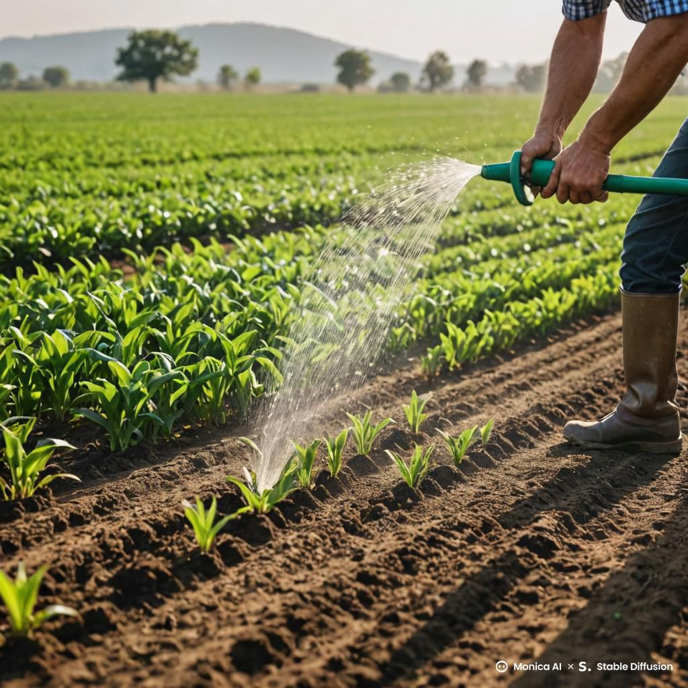
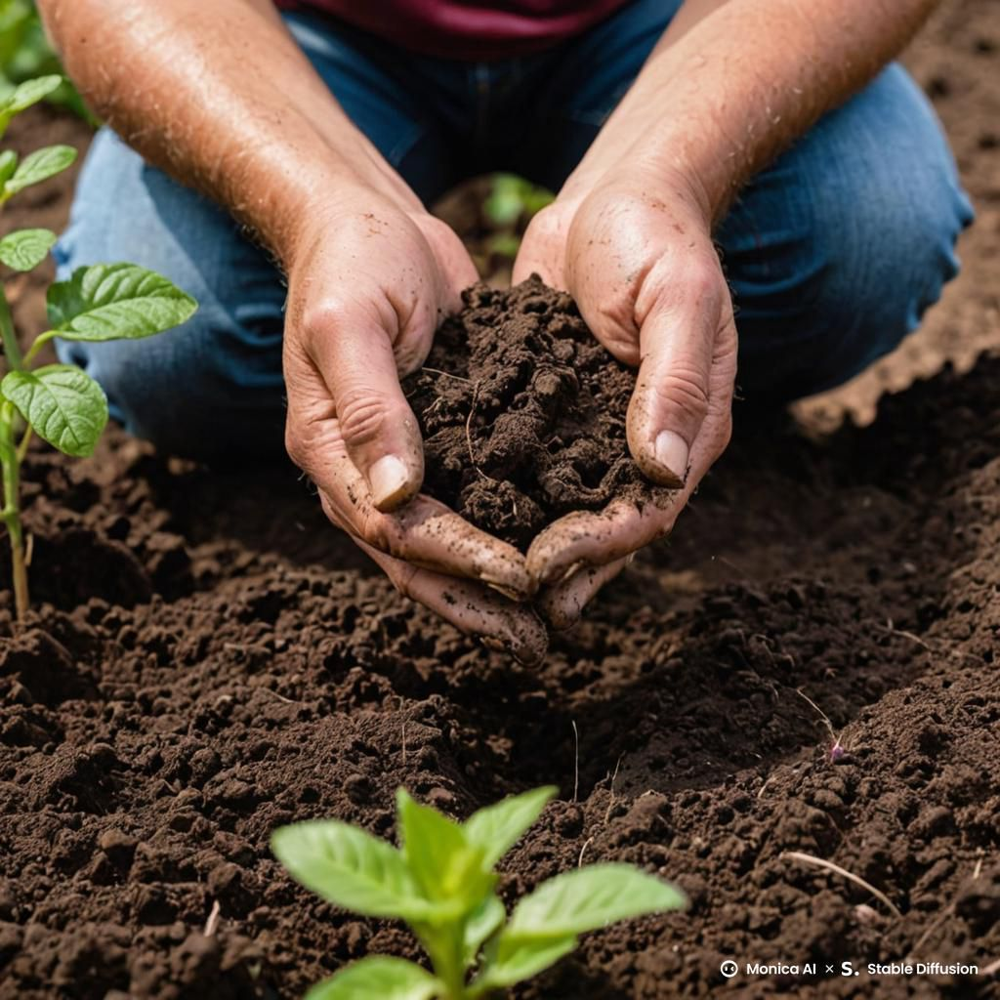
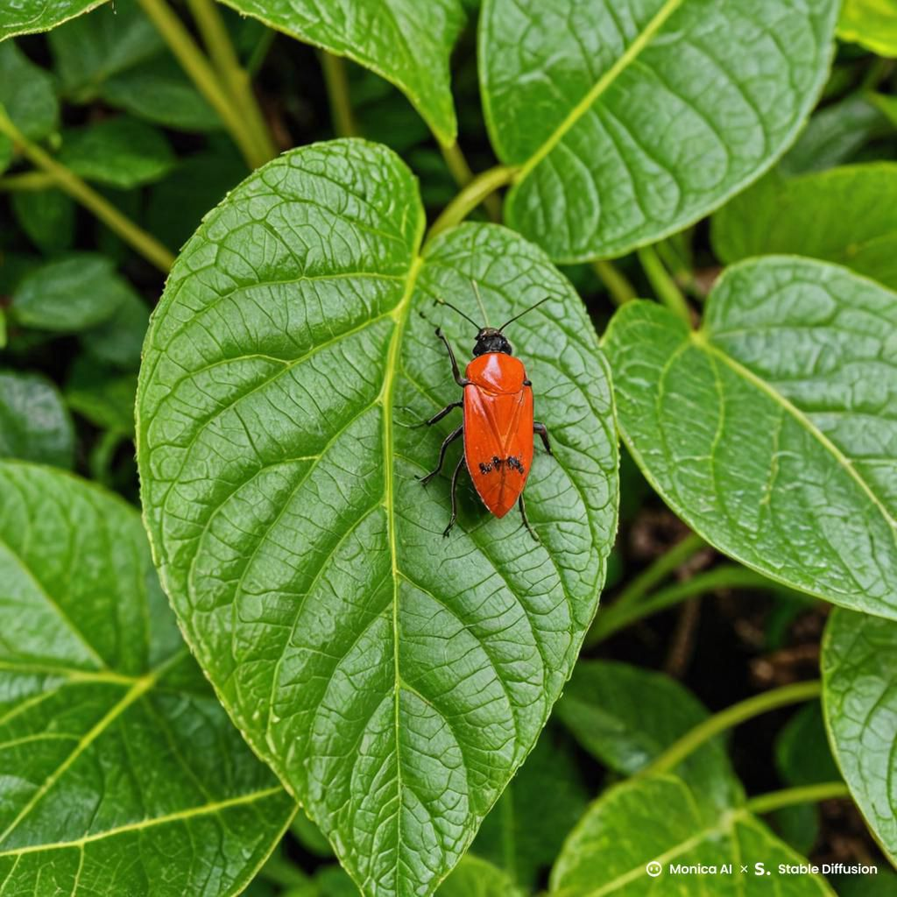
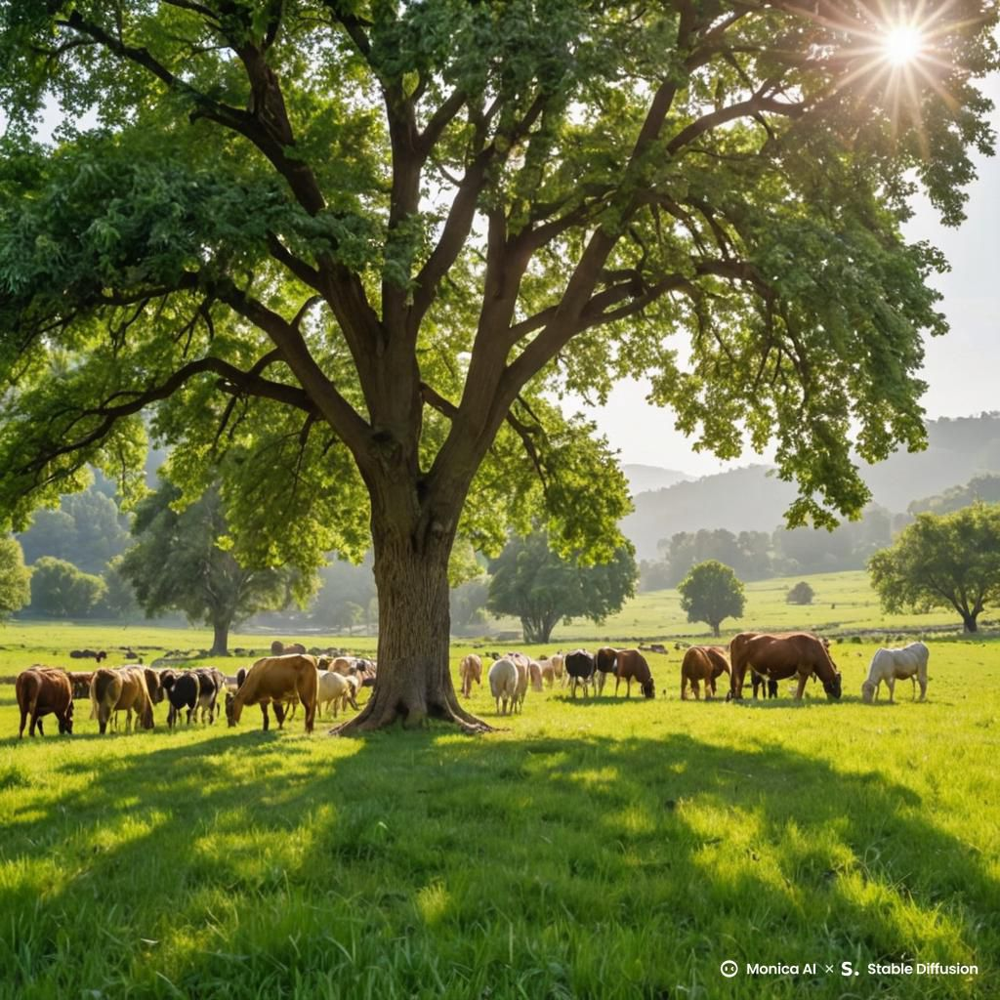
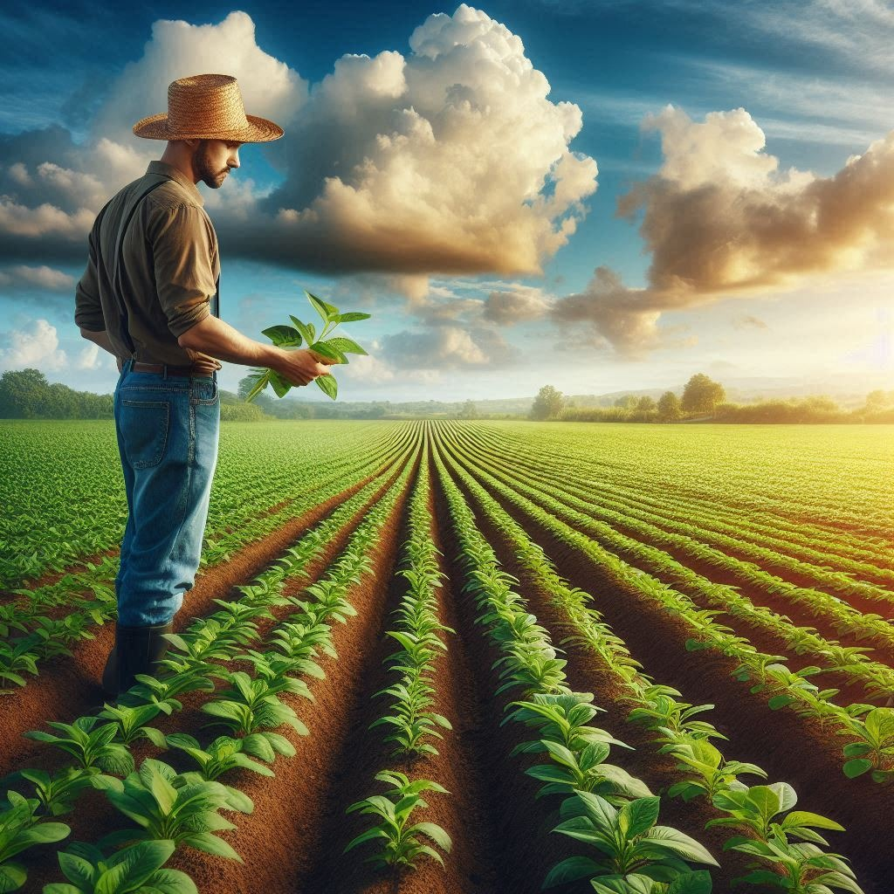
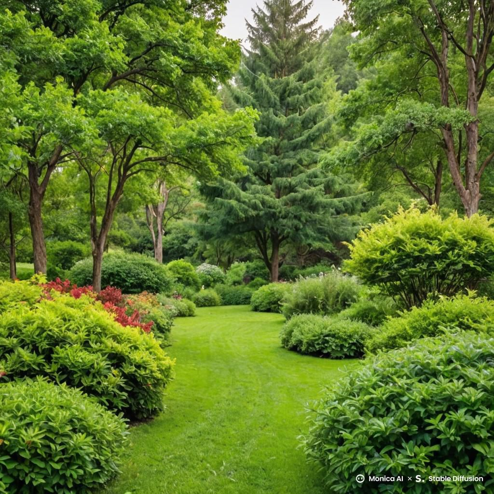

Estos consejos prácticos pueden ayudarte a mejorar tus cultivos y cuidar mejor de tus plantas:

Riego adecuado
Recuerda regar tus plantas en las horas de la mañana o la tarde para evitar que el sol queme las hojas.

Suelo bien cuidado
Haz pruebas periódicas de tu suelo para saber si necesita nutrientes adicionales. ¡La salud del suelo es clave!

Protección contra plagas
Usa métodos naturales para controlar las plagas, como las trampas o los insectos beneficiosos.

Silvopastoreo
Cultiva de árboles, arbustos o cultivos leñosos.

Rotacion de cultivos
Planta dos o más alimentos en la misma área de manera simultanea

Asociacion de cultivos
Cultiva de árboles, arbustos o cultivos leñosos.
Sigue estos consejos y verás cómo tus cultivos crecen más saludables. ¡La paciencia y la dedicación son clave para una buena cosecha!
Prácticas de Agricultura de Precisión
La agricultura de precisión utiliza tecnologías avanzadas para optimizar la producción agrícola, mejorando la eficiencia y sostenibilidad de los cultivos. A continuación, te presentamos algunos consejos y las principales ventajas de su implementación:
Consejos y Recomendaciones
Monitoreo del Suelo: Utiliza sensores para medir variables como humedad, temperatura y nutrientes, permitiendo decisiones informadas sobre riegos y fertilización. (Fuente)
Mapeo de Zonas Variadas: Identifica áreas con diferentes características para aplicar tratamientos específicos, optimizando recursos y mejorando rendimientos. (Fuente)
Automatización de Maquinaria: Implementa equipos que operen de manera autónoma, reduciendo costos laborales y aumentando la precisión en las labores agrícolas. (Fuente)
Beneficios Clave
Reducción de Insumos: Disminuye el uso de fertilizantes y pesticidas al aplicarlos solo donde es necesario. (Fuente)
Mejora en la Salud del Suelo: Promueve prácticas que conservan y enriquecen la calidad del suelo. (Fuente)
Aumento de la Rentabilidad: Optimiza los recursos, incrementando la eficiencia y los beneficios económicos. (Fuente)